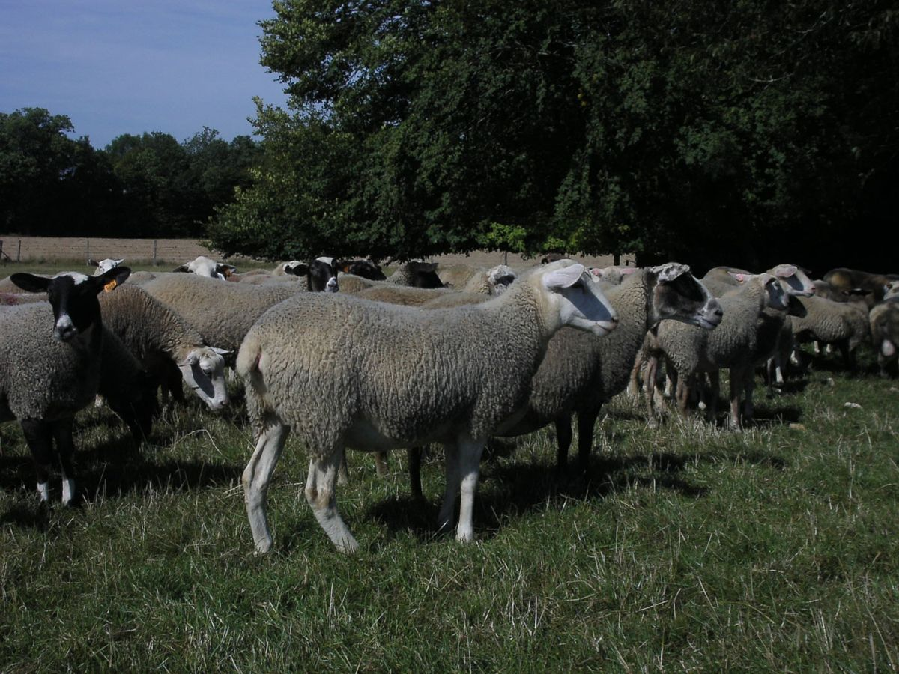

L'histoire de la Romane
Une aventure née à l'INRAe, portée par les éleveurs
L'histoire de la Romane, c'est d'abord une aventure. Une aventure menée par l'INRAe dans un premier temps. Puis, au fil du temps, les éleveurs se sont associés à ce projet. Des éleveurs avant-gardistes, passionnés, qui ont œuvré contre vents et marées pour réussir à imposer cette race comme une race de tout premier plan dans le paysage ovin français.
La Romane (anciennement Inra 401) est née dans les années 70, au domaine de la Sapinière, près de Bourges, avec comme objectif d'augmenter la productivité du troupeau ovin français. Elle est issue de croisements successifs entre animaux Romanov et Berrichon du Cher.
- La Romanov est une race extrêmement prolifique, aux grandes qualités d'élevage (précocité sexuelle, saison sexuelle étendue, instinct maternel développé et bonne valeur laitière), mais elle est passablement conformée et a une laine grossière.
- Le Berrichon du Cher, race bouchère par excellence, présente aussi des qualités de précocité, de rusticité et d'aptitude à la marche.

De l'INRAe à l'OS Romane
Tout d'abord portée par l'INRAe, la race s'est structurée autour d'une AUSI (Association des Utilisateurs Sélectionneurs de l'INRA 401), pour ensuite évoluer en UPRA (Unité de Promotion des Races), puis en OS (Organismes de Sélection) au gré des différentes lois d'orientation agricoles.
C'est aujourd'hui l'OS ROMANE qui dispose de l'agrément officiel pour porter la race et son schéma de sélection.